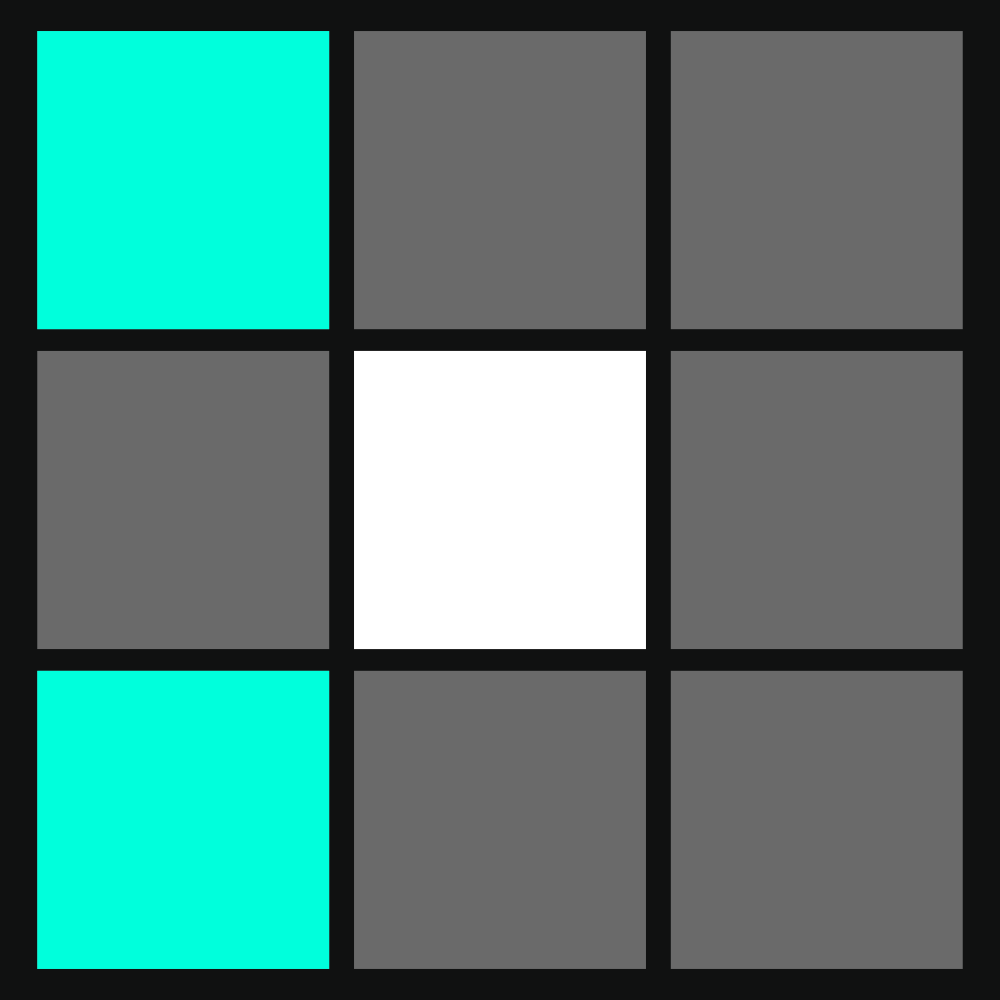
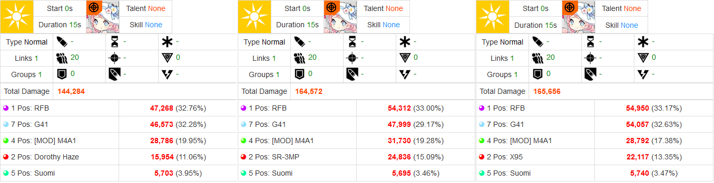
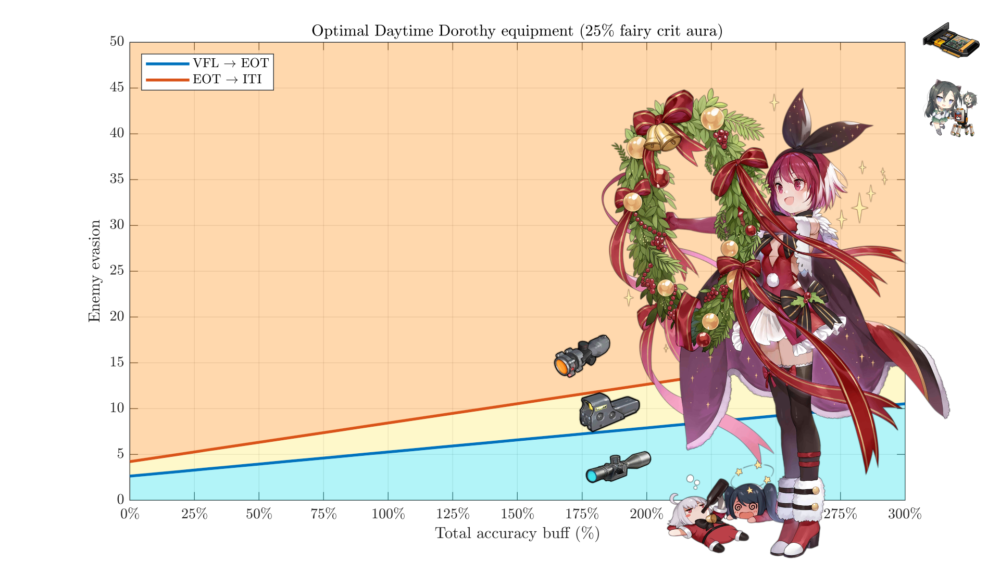
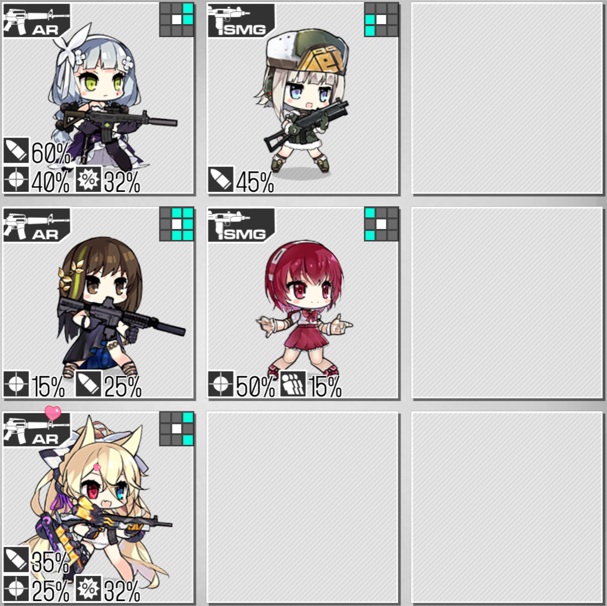
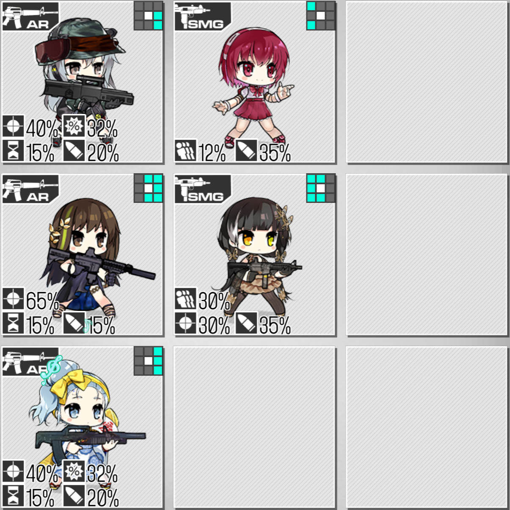

This is part of a series covering the VA-11 Hall-A dolls. You can go back to the overview here.
Introduction#
Secret Modifications ICD 1s/CD 2s
Press to toggle between Nano-Camo and MIRD-113.
MIRD-113: When activated, increase self damage by 100% and decrease the accuracy of all allies in the same column by 40% but increase their evasion by 80%.
Nano-Camo: When activated, increase self evasion by 100% and decrease the evasion of all allies in the same column by 40% but increase their accuracy by 80%.
When Dorothy is in the center row, she activates Nano-Camo by default and MIRD-113 otherwise.
Favorite Drink: When buffed by a Piano Woman, reduce the debuff effect of her skill by 50%.

These abilities cannot trigger Python's passive, not that that would have been a good idea.
Dorothy essentially has an offtank mode that also buffs the EVA of your maintank, and a maintank mode that debuffs the EVA of your offtank. Dorothy's selfbuff is permanent, but her buff to fellow SMGs in the column needs them to stay in place. This can make using her as an EVA buffer somewhat tricky, as kiting your maintank alone into the front column would lose them Dorothy's buff.
As a Tank#
To get a general frame of reference, let's work out how much EHP Dorothy and some other popular SMG options have under typical conditions.
| Doll | EHP vs low (20) ACC | EHP vs high (100) ACC |
|---|---|---|
| Dorothy | 12936 | 3291 |
| C-MS | 10388 | 2818 |
| UMP45 | 7361 | 2252 |
| RO635 (passive only; 0 debuffs) | 9825 | 2774 |
| RO635 (passive only; 2 debuffs) | 12455 | 3190 |
| RO635 (with active; 2 debuffs) | 30526 | 6949 |
| Suomi (pre-skill) | 7480 | 2376 |
| Suomi (in-skill) | 17050 | 4290 |
Ro's active skill uptime isn't fantastic, but as you can see, she gets a little crazy. However, if our standard of comparison is set so high that only the very top modded protagonists are acceptable, we can conclude almost all of our analyses by saying the doll in question is worthless.
While Dorothy can't compete with RO mod and can't match EVA selfbuffers while their skills are active, she's looking pretty good. 100% skill uptime and more EHP than C-MS is worth noting.
I would usually recommend using Dorothy in this role. Just be mindful of the EVA debuff on your offtank, and try not to let them take many bullets.
As a Shrimp#
Dorothy's tiles are a bit of a problem here. Whether she stands on position 2 or 8, Dorothy only hits your center AR with her tiles. AR DPS tends to be better than SMG DPS, especially past the first battle, so offtanks like SR-3MP and X95 are starting at an advantage by total echelon damage output.
One arbitrary, rough comparison:

This isn't the full story, as her EVA buff to the maintank could be valuable enough to make up for a little lower DPS. But it's not a super exciting option either.
In this mode, to maximize your DPS, I would generally recommend equipping her with a chip, HP ammo, and an ITI. EOTs drop her down a frame and would only be preferred if you happen to have excessive accuracy buffs or are fighting unarmed ELIDs.

Historical Uses#
- Dorothy has sometimes seen use in Theater, especially in the first few to support C-MS against the Brute+SWAP Striker mob.
- Dorothy was part of a Gustav-killing ARSMG on foreign servers in SC ranking, although the typical EN strategy became gunboating due to vision changes/bug fixes. In that team, she was used as an offtank to support the main tank and put in a good amount of damage.
- While it went unkilled on all other servers, JP players discovered an echelon with M4A1/ST AR-15/M1895/SAT8/Dorothy that could kill the infamous Judge+Dreamer spawn in Singularity ranking (id1801).
Conclusion#
Direct-fire SMGs are not a very useful archetype and RO's mod puts any other EVA tank to shame. Dorothy is certainly not at the top of the SMG list, but her flexibility makes her a worthwhile tool to have in case it comes up. In fact, you could use her to buff RO's EVA even higher! Recommended with low priority.
Minor Notes#
- HG tiles offer much more than 15% FP, and they have DPS-boosting skills as well. Dorothy is not a replacement for a buffing HG in RFHGs. She can be used if you really need an EVA tank for some situation, but know that you are making a sacrifice in buffs.
- Dorothy is not dupeworthy, if you got one last time. A second copy would purely be for collection/flex.
Example Echelons#
Standard disclaimer: teams should be built as needed according to the circumstances of specific maps and enemies. Do not blindly copy-and-paste teams. With that in mind, here are some not-entirely-awful ideas to illustrate where Dorothy can be used.

